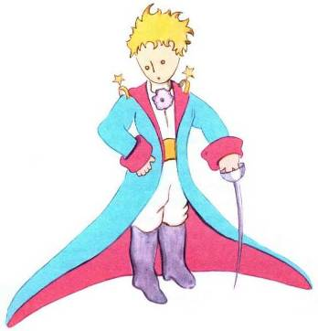

À LÉON WERTH
Je demande pardon aux enfants d’avoir dédié ce livre à une grande personne. J’ai une excuse sérieuse : cette grande personne est le meilleur ami que j’ai au monde. J’ai une autre excuse : cette grande personne peut tout comprendre, même les livres pour enfants. J’ai une troisième excuse : cette grande personne habite la France où elle a faim et froid. Elle a bien besoin d’être consolée. Si toutes ces excuses ne suffisent pas, je veux bien dédier ce livre à l’enfant qu’a été autrefois cette grande personne. Toutes les grandes personnes ont d’abord été des enfants. (Mais peu d’entre elles s’en souviennent.) Je corrige donc ma dédicace :
À LÉON WERTH
QUAND IL ÉTAIT PETIT GARÇON
